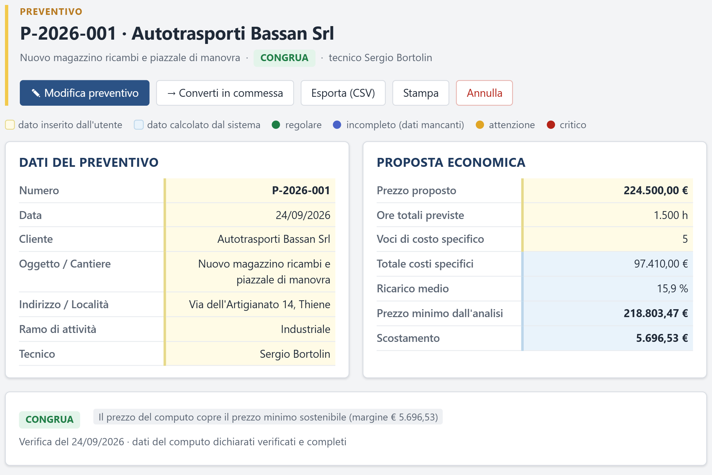

01
Il prezzo regge? Lo sai prima di firmare
Ogni preventivo viene confrontato con il prezzo minimo sostenibile: ore, costi specifici, rischio, redditività e surplus economico della tua azienda.
- Esito immediato: congrua, non congrua, da completare
- Ricarico controllato voce per voce
- L'offerta accettata diventa commessa con un clic